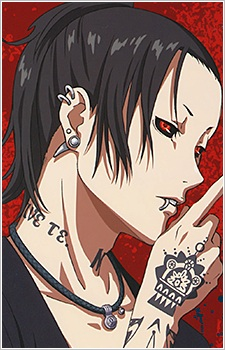

Informasi Anime
Genre: Action, Fantasy, Horror, Suspense
Ditayangkan: 4 Juli 2014 Sampai 19 September 2014
Tahun Rilis: 2014
Jumlah Episode: 12
Durasi: 24 menit
Studio: Studio Pierrot
Platform Streaming:
Tokyo Ghoul
Di kota Tokyo, manusia hidup berdampingan dengan makhluk misterius bernama Ghoul makhluk yang tampak
seperti manusia, tetapi hanya bisa bertahan hidup dengan memakan daging manusia.
Cerita berpusat pada Ken Kaneki, seorang mahasiswa pendiam yang kehidupannya berubah total setelah berkencan dengan
gadis bernama Rize Kamishiro. Tanpa disadari, Rize adalah seorang Ghoul, dan dalam insiden tragis, Kaneki nyaris tewas.
Untuk menyelamatkannya, dokter memindahkan organ Rize ke tubuhnya membuat Kaneki berubah menjadi setengah manusia, setengah Ghoul.
Kini, Kaneki harus belajar bertahan di dua dunia yang saling membenci. Ia bergabung dengan kafe Anteiku, tempat para Ghoul
berusaha hidup damai, sambil berjuang menerima jati dirinya yang baru. Namun, pertempuran antara manusia dan Ghoul semakin
memanas, dan Kaneki perlahan kehilangan sisi kemanusiaannya.
Character & Voice Actor

Ken Kaneki
Hanae Natsuki

Touka Kirishima
Amamiya Sora


Juuzou Suzuya
Kugimiya Rie


Uta
Sakurai Takahiro